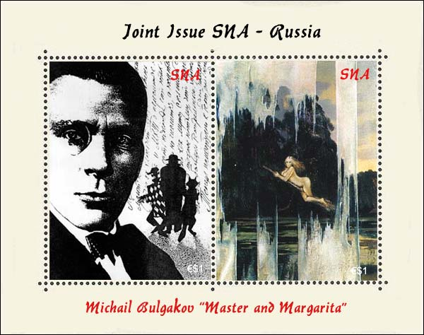

|
THE FIRST LITERARY CONGRESS
IN THE SNA
RUSSIAN
NOVELIST MIKHAIL BULGAKOV
Between the 3rd and
the 5th January 2004 took place in the capital of the Spanish North Africa,
Ciudad de Leon, the first congress dedicated to the study of the literary
inheritance of the great Russian writer Mikhail Bulgakov.

Commemorating this
special event, the SNA has issued on the 8th of January 2004 the souvenir
sheet shown above. The print run of this joint issue with the Russian PA was
was of 100,000 pieces, all numbered on the verso.
The two stamps of the
sheet show the art works of Irina Shipovskaia "Bulgakov and the Threesome"
and of Nikas Safronov, "Margarita flying to the witches' Sabbath".
More about Mikhail
Bulgakov and about his masterwork can be found on the excellent site:
http://cr.middlebury.edu/public/russian/Bulgakov/public_html/
|